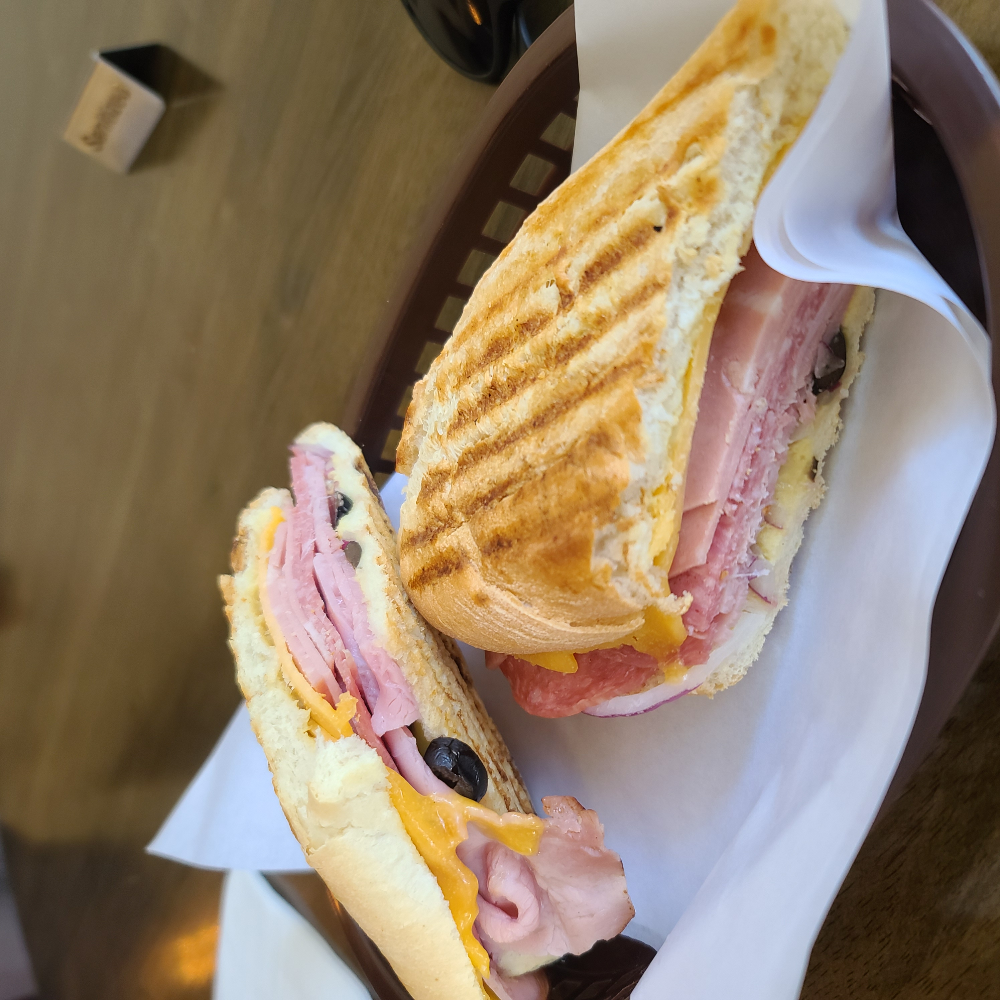

Purpose
The purpose of this webpage is to create a website for Lab 7 of COMP 131.
As this website, in its current form, will not serve any other purpose I have chosen to focus on sandwiches because
it is the first image I had saved on my phone that I was comfortable sharing.
How to Make a Sandwich but not the one in the picture)
